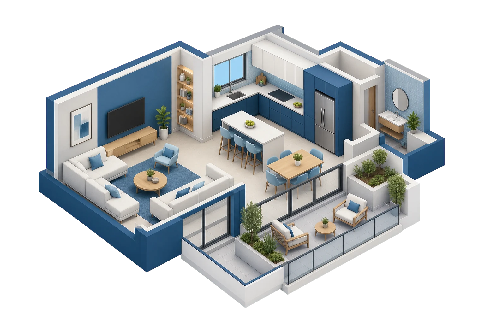
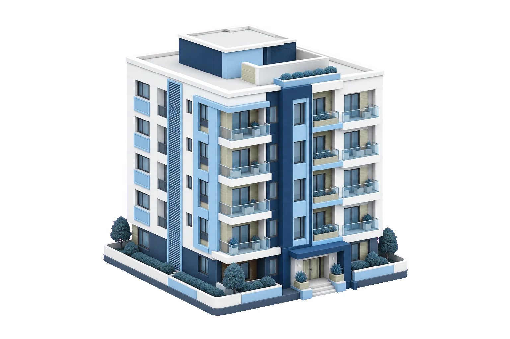
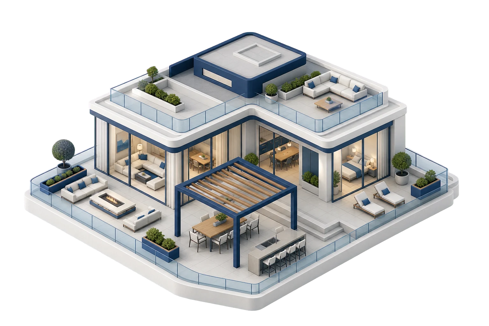
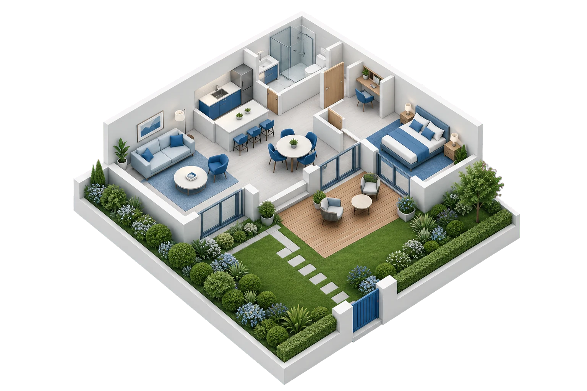
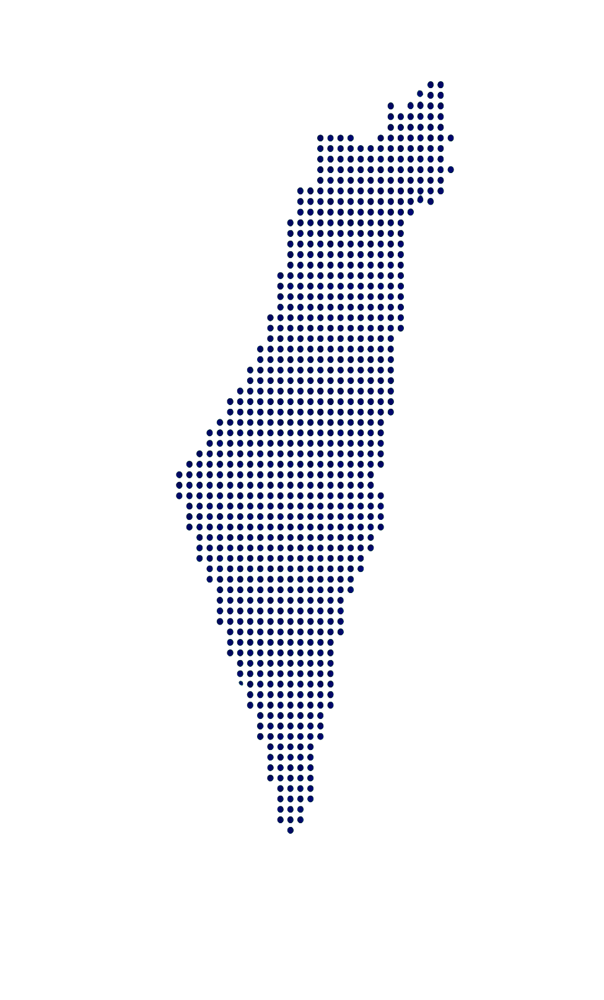

בדיקה שיטתית
סקירה מסודרת של גמרים, רטיבות ואיטום, פתחים, תשתיות ומערכות הנגישות לבדיקה.
אור בדק בית • בדיקות מקצועיות בכל הארץ
בדיקה מקצועית לדירה חדשה מקבלן או לדירת יד שנייה, לאיתור ליקויי בנייה, רטיבות, איטום ותשתיות. בסיום תקבלו דוח ברור עם תמונות והערכת עלויות שיעזור לכם לקבל החלטה ולפעול מול המוכר או הקבלן.




בדיקה שנותנת לכם בסיס ברור להחלטה
מחפשים בדק בית?
הבדיקה הנכונה תלויה בסוג הנכס ובשלב שבו אתם נמצאים. בחרו את המצב שמתאים לכם וקבלו מידע ממוקד לפני שמתחייבים.
למה לבחור באור בדק בית?
המטרה היא להפוך נכס מורכב למידע ברור, שימושי ומסודר שאפשר לפעול לפיו.
סקירה מסודרת של גמרים, רטיבות ואיטום, פתחים, תשתיות ומערכות הנגישות לבדיקה.
עשר שנות ניסיון באיתור ליקויי בנייה, בדיקות דירות וליווי רוכשים בכל הארץ.
כל ממצא כולל מיקום, תמונות, הסבר והערכת עלויות כדי שתדעו מה דחוף ומה ניתן לתכנן.
מענה לאחר קבלת הדוח, סיוע בהצגת הממצאים ובדיקה חוזרת לאחר תיקונים לפי הצורך.
שירותים מקצועיים
היקף העבודה מותאם לסוג הנכס, לשלב העסקה ולצורך המקצועי שלכם.
בדיקה יסודית שעוזרת להבין את מצב הנכס, התיקונים הצפויים והמשמעות שלהם לפני העסקה.
למידע נוסף ← 02דוח ברור עם תמונות, מיקום הממצאים, הסבר מקצועי וסדרי גודל לתיקון.
למידע נוסף ← 03בדיקה לפני מסירת הדירה או אחריה, תיעוד הליקויים וליווי בהתנהלות מול הקבלן.
למידע נוסף ← 04חוות דעת מקצועית לצרכים משפטיים, לרבות חוות דעת מומחה לבית משפט.
למידע נוסף ← 05ליווי וניהול מקצועי של פרויקטים, משלב התכנון ועד שלבי הביצוע והגמר.
למידע נוסף ← 06בניית כתבי כמויות וליווי מקצועי בבחירת גמרים ובמהלך שיפוץ.
למידע נוסף ←שירות בכל הארץ
בדק בית, חוות דעת וליווי מקצועי בכל אזורי הארץ, בתיאום מראש.

לפני שמתחילים
לפני רכישת נכס מיד שנייה, ולפני או לאחר מסירת דירה חדשה. נשמח לכוון אתכם לפי שלב העסקה.
דוח מסודר הכולל ממצאים והערכת עלויות תיקון, בהתאם להיקף השירות שנבחר.
משך הבדיקה תלוי בגודל הנכס, במצבו ובהיקף השירות. בעת התיאום נוכל להעריך כמה זמן תימשך הבדיקה בנכס שלכם.
המחיר נקבע לפי סוג הנכס, גודלו והיקף הבדיקה. לאחר שנבין את הצורך, נמסור הצעת מחיר ברורה ומותאמת.
הצעד הבא שלכם
לתיאום בדק בית, חוות דעת או ליווי פרויקט, שלחו הודעה ונחזור אליכם בהקדם.